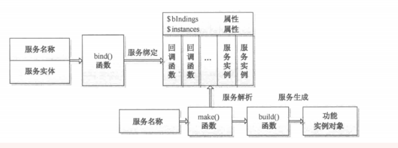

在Laravel框架中，什么设计是最巧妙，那么一定是服务容器和服务和服务提供者。
Laravel之所以能够具备低耦合，易扩展和可重用的优秀特性，也正是因为服务容器和服务服务提供者。服务容器中有两个概念控制反转(IOC)和依赖注入(DI):，在之前的系列文章我们已经简单提过了

在Laravel中框架把自带的各种服务绑定到服务容器，我们也可以绑定自定义服务到容器。当应用程序需要使用某一个服务时，服务容器会讲服务解析出来同时自动解决服务之间的依赖然后交给应用程序使用。
从图中我们可以看到最主要的就是服务绑定和服务解析了。
服务绑定 常用的绑定服务到容器的方法有instance, bind, singleton, alias。
instance 将一个已存在的对象绑定到服务容器里，随后通过名称解析该服务时，容器将总返回这个绑定的实例。
1 2 $api = new HelpSpot\API(new HttpClient);$this ->app->instance('HelpSpot\Api' , $api );
bind 绑定服务到服务容器
有三种绑定方式:
绑定自身 1 $this ->app->bind ('HelpSpot\API' , null);
绑定闭包 1 2 3 4 5 6 $this ->app->bind ('HelpSpot\API' , function return new HelpSpot\API(); });//闭包直接提供类实现方式 $this ->app->bind ('HelpSpot\API' , function ($app ) { return new HelpSpot\API($app ->make('HttpClient' )); });//闭包返回需要依赖注入的类
绑定接口和实现 1 $this ->app->bind ('Illuminate\Tests\Container\IContainerContractStub' , 'Illuminate\Tests\Container\ContainerImplementationStub' );
针对第一种情况，其实在bind方法内部会在绑定服务之前通过getClosure()为服务生成闭包，我们来看一下bind方法源码。
1 2 3 4 5 6 7 8 9 10 11 12 13 14 15 16 17 18 19 20 21 22 23 24 25 26 27 28 29 30 31 32 33 34 35 36 37 38 39 40 public function bind ($abstract , $concrete = null, $shared = false ) { $abstract = $this ->normalize($abstract ); $concrete = $this ->normalize($concrete ); //如果$abstract 为数组类似['Illuminate/ServiceName' => 'service_alias' ] //抽取别名"service_alias" 并且注册到$aliases []中 //注意：数组绑定别名的方式在5.4中被移除，别名绑定请使用下面的alias 方法 if (is_array($abstract )) { list($abstract , $alias ) = $this ->extractAlias($abstract ); $this ->alias ($abstract , $alias ); } $this ->dropStaleInstances($abstract ); if (is_null($concrete )) { $concrete = $abstract ; } //如果只提供$abstract ，则在这里为其生成concrete闭包 if (! $concrete instanceof Closure) { $concrete = $this ->getClosure($abstract , $concrete ); } $this ->bindings[$abstract ] = compact('concrete' , 'shared' ); if ($this ->resolved($abstract )) { $this ->rebound($abstract ); } } protected function getClosure($abstract , $concrete ) { // $c 就是$container ，即服务容器，会在回调时传递给这个变量 return function ($c , $parameters = []) use ($abstract , $concrete ) { $method = ($abstract == $concrete ) ? 'build' : 'make' ; return $c ->$method ($concrete , $parameters ); }; }
bind把服务注册到服务容器的$bindings属性里类似这样：
1 2 3 4 5 6 7 8 9 10 11 12 $bindings = [ 'HelpSpot\API' => [//闭包绑定 'concrete' => function ($app , $paramters = []) { return $app ->build('HelpSpot\API' ); }, 'shared' => false //如果是singleton绑定，这个值为true ] 'Illuminate\Tests\Container\IContainerContractStub' => [//接口实现绑定 'concrete' => 'Illuminate\Tests\Container\ContainerImplementationStub' , 'shared' => false ] ]
singleton 1 2 3 4 5 public function singleton($abstract , $concrete = null) { $this ->bind ($abstract , $concrete , true ); }
singleton 方法是bind方法的变种，绑定一个只需要解析一次的类或接口到容器，然后接下来对于容器的调用该服务将会返回同一个实例,类似于单例模式
alias 把服务和服务别名注册到容器:1 2 3 4 5 public function alias ($abstract , $alias ) { $this ->aliases[$alias ] = $this ->normalize($abstract ); }
alias 方法在上面讲bind方法里有用到过，它会把把服务别名和服务类的对应关系注册到服务容器的$aliases属性里。 例如: $this->app->alias(‘\Illuminate\ServiceName’, ‘service_alias’);
服务解析 服务解析主要由make实现，类的构建由build来实现
make: 从服务容器中解析出服务对象，该方法接收你想要解析的类名或接口名作为参数
1 2 3 4 5 6 7 8 9 10 11 12 13 14 15 16 17 18 19 20 21 22 23 24 25 26 27 28 29 30 31 32 33 34 35 36 37 38 39 40 41 42 43 44 45 46 47 48 49 50 51 52 53 54 55 56 57 58 59 60 61 62 63 64 65 66 67 68 69 70 71 72 73 74 75 76 77 78 79 80 81 82 83 84 85 86 87 88 89 90 91 92 93 94 95 96 97 98 99 100 101 102 103 104 105 106 107 108 109 110 111 112 113 114 115 116 117 118 119 120 121 122 123 124 125 126 127 128 129 130 131 132 133 134 135 136 137 138 139 140 141 142 143 144 145 146 147 148 149 150 151 152 153 154 155 156 157 158 159 /** * Resolve the given type from the container. * * @param string $abstract * @param array $parameters * @return mixed */ public function make($abstract , array $parameters = []) { // getAlias方法会假定$abstract 是绑定的别名，从$aliases 找到映射的真实类型名 // 如果没有映射则$abstract 即为真实类型名，将$abstract 原样返回 $abstract = $this ->getAlias($this ->normalize($abstract )); // 如果服务是通过instance()方式绑定的，就直接解析返回绑定的service if (isset($this ->instances[$abstract ])) { return $this ->instances[$abstract ]; } // 获取$abstract 接口对应的$concrete (接口的实现) $concrete = $this ->getConcrete($abstract ); if ($this ->isBuildable($concrete , $abstract )) { $object = $this ->build($concrete , $parameters ); } else { // 如果时接口实现这种绑定方式，通过接口拿到实现后需要再make一次才能 // 满足isBuildable的条件 ($abstract === $concrete ) $object = $this ->make($concrete , $parameters ); } foreach ($this ->getExtenders($abstract ) as $extender ) { $object = $extender ($object , $this ); } // 如果服务是以singleton方式注册进来的则，把构建好的服务对象放到$instances 里， // 避免下次使用时重新构建 if ($this ->isShared($abstract )) { $this ->instances[$abstract ] = $object ; } $this ->fireResolvingCallbacks($abstract , $object ); $this ->resolved[$abstract ] = true ; return $object ; } protected function getConcrete($abstract ) { if (! is_null($concrete = $this ->getContextualConcrete($abstract ))) { return $concrete ; } // 如果是$abstract 之前没有注册类实现到服务容器里，则服务容器会认为$abstract 本身就是接口的类实现 if (! isset($this ->bindings[$abstract ])) { return $abstract ; } return $this ->bindings[$abstract ]['concrete' ]; } protected function isBuildable($concrete , $abstract ) { return $concrete === $abstract || $concrete instanceof Closure; } 通过对make方法的梳理我们发现，build方法的职能是构建解析出来的服务的对象的，下面看一下构建对象的具体流程。（构建过程中用到了PHP类的反射来实现服务的依赖注入） public function build($concrete , array $parameters = []) { // 如果是闭包直接执行闭包并返回（对应闭包绑定） if ($concrete instanceof Closure) { return $concrete ($this , $parameters ); } // 使用反射ReflectionClass来对实现类进行反向工程 $reflector = new ReflectionClass($concrete ); // 如果不能实例化，这应该是接口或抽象类，再或者就是构造函数是private的 if (! $reflector ->isInstantiable()) { if (! empty($this ->buildStack)) { $previous = implode(', ' , $this ->buildStack); $message = "Target [$concrete ] is not instantiable while building [$previous ]." ; } else { $message = "Target [$concrete ] is not instantiable." ; } throw new BindingResolutionException($message ); } $this ->buildStack[] = $concrete ; // 获取构造函数 $constructor = $reflector ->getConstructor(); // 如果构造函数是空，说明没有任何依赖，直接new返回 if (is_null($constructor )) { array_pop($this ->buildStack); return new $concrete ; } // 获取构造函数的依赖（形参），返回一组ReflectionParameter对象组成的数组表示每一个参数 $dependencies = $constructor ->getParameters(); $parameters = $this ->keyParametersByArgument( $dependencies , $parameters ); // 构建构造函数需要的依赖 $instances = $this ->getDependencies( $dependencies , $parameters ); array_pop($this ->buildStack); return $reflector ->newInstanceArgs($instances ); } // 获取依赖 protected function getDependencies(array $parameters , array $primitives = []) { $dependencies = []; foreach ($parameters as $parameter ) { $dependency = $parameter ->getClass(); // 某一依赖值在$primitives 中(即build方法的$parameters 参数)已提供 // $parameter ->name返回参数名 if (array_key_exists($parameter ->name, $primitives )) { $dependencies [] = $primitives [$parameter ->name]; } elseif (is_null($dependency )) { // 参数的ReflectionClass为null，说明是基本类型，如'int' ,'string' $dependencies [] = $this ->resolveNonClass($parameter ); } else { // 参数是一个类的对象， 则用resolveClass去把对象解析出来 $dependencies [] = $this ->resolveClass($parameter ); } } return $dependencies ; } // 解析出依赖类的对象 protected function resolveClass(ReflectionParameter $parameter ) { try { // $parameter ->getClass()->name返回的是类名（参数在typehint里声明的类型） // 然后递归继续make（在make时发现依赖类还有其他依赖，那么会继续make依赖的依赖 // 直到所有依赖都被解决了build才结束) return $this ->make($parameter ->getClass()->name); } catch (BindingResolutionException $e ) { if ($parameter ->isOptional()) { return $parameter ->getDefaultValue(); } throw $e ; } }
服务容器就是laravel的核心， 它通过依赖注入很好的替我们解决对象之间的相互依赖关系，而又通过控制反转让外部来来定义具体的行为（Route, Eloquent这些都是外部模块，它们自己定义了行为规范，这些类从注册到实例化给你使用才是服务容器负责的）。
一个类要被容器所能够提取，必须要先注册至这个容器。既然 laravel 称这个容器叫做服务容器，那么我们需要某个服务，就得先注册、绑定这个服务到容器，那么提供服务并绑定服务至容器的东西就是服务提供器（ServiceProvider)。服务提供者主要分为两个部分：register（注册） 和 boot（引导、初始化），请看下一篇。